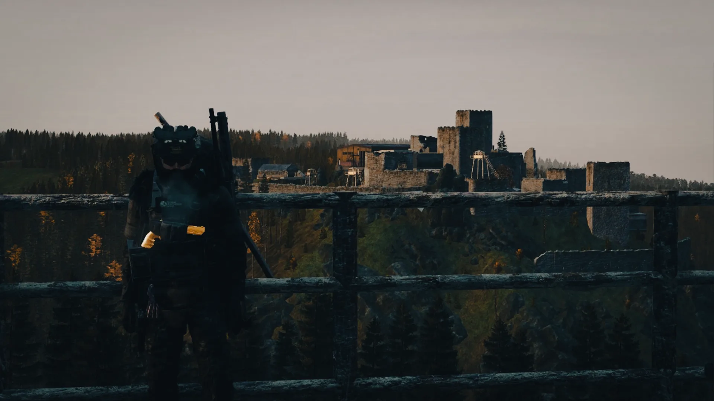
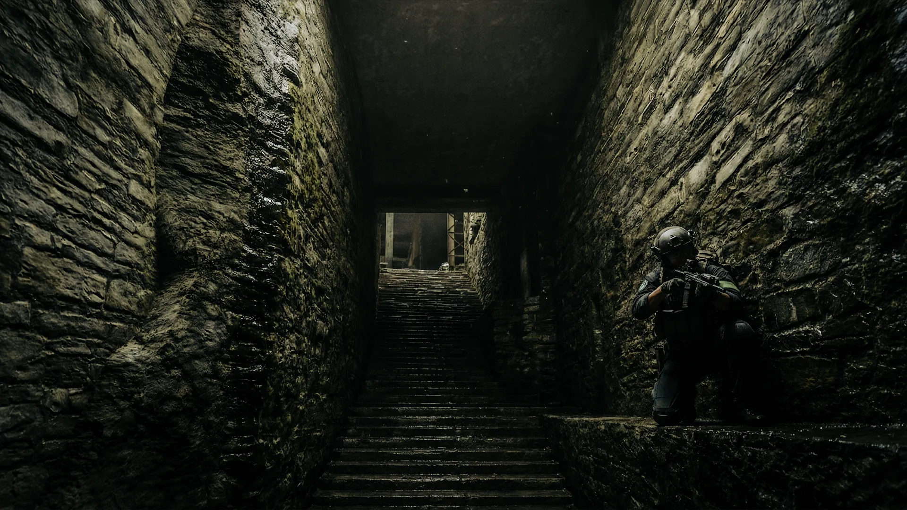
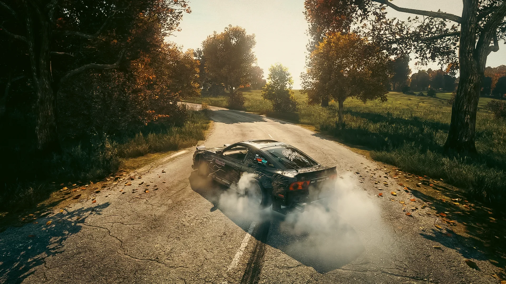
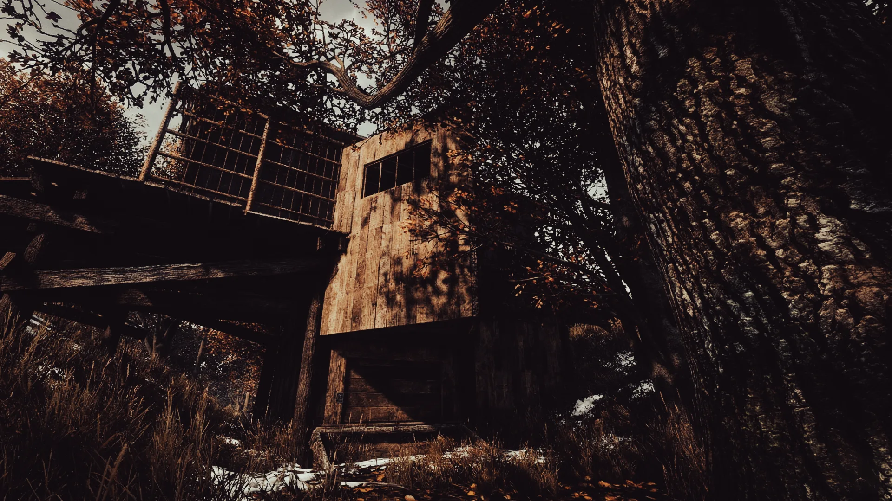
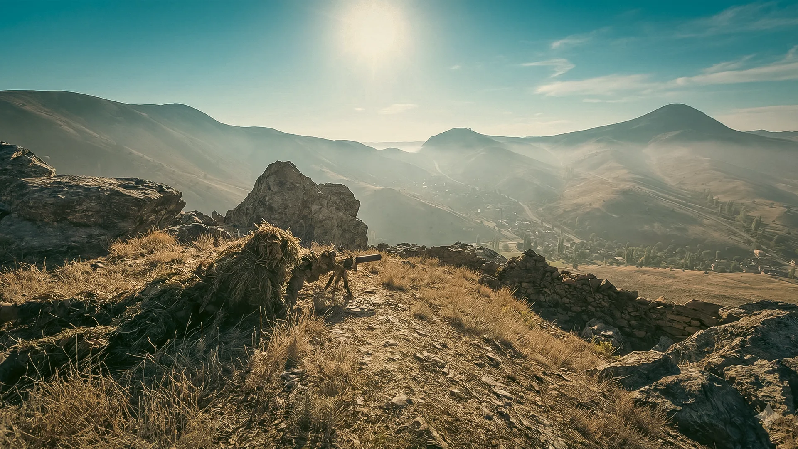
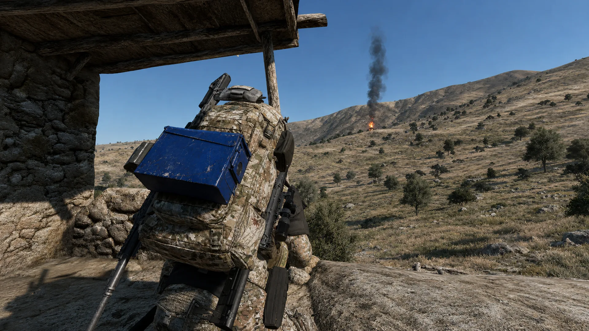
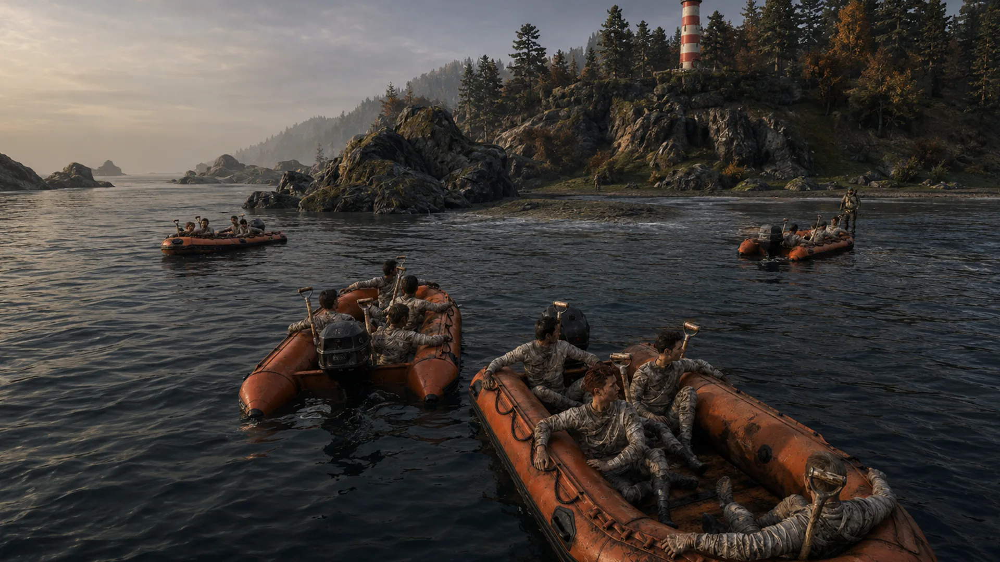
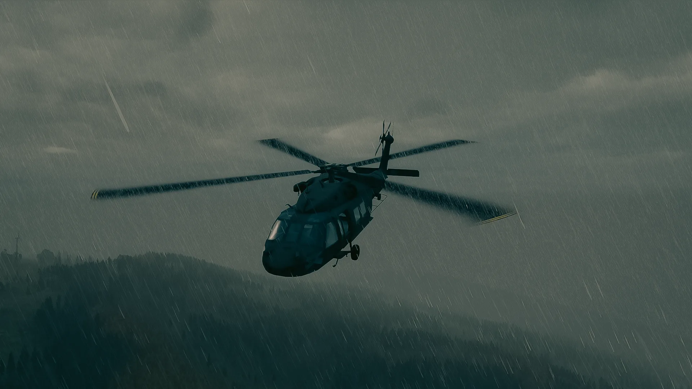
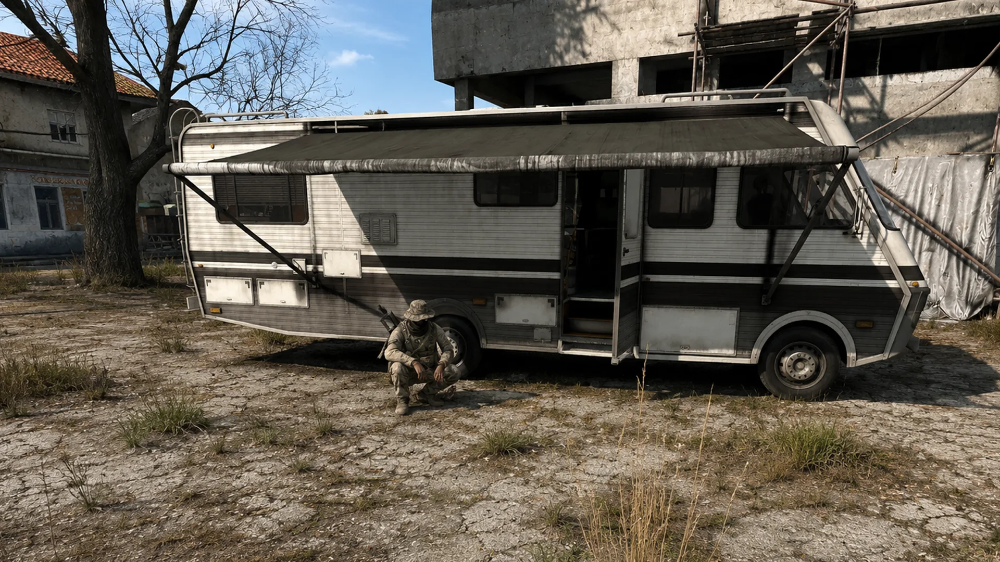
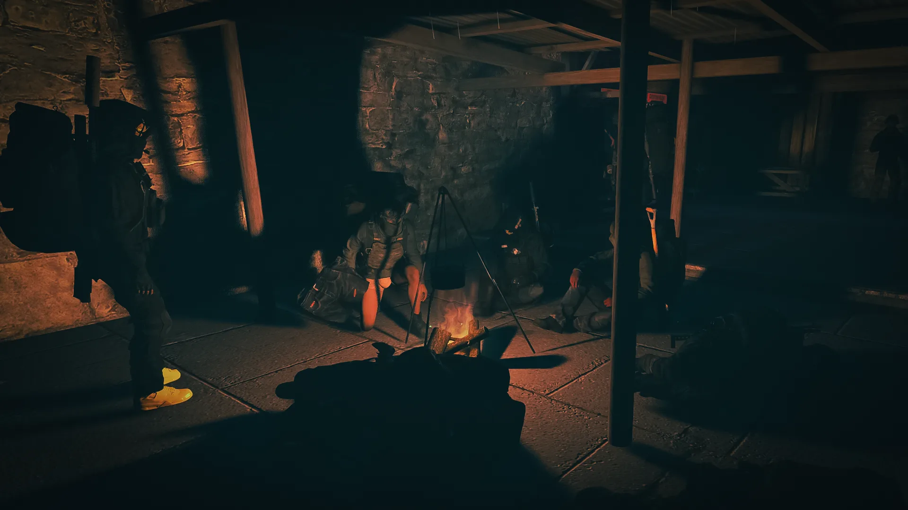

01
Progress with purpose
Start with food, quests and a Territory HQ. Grow into specialist crafting, licences, dangerous POIs, helicopters and end-game expeditions.
Hacksaw | UK / EU / NA
A fully custom, AI-focused progressive PvE experience. Build your foothold in Chernarus, unlock deeper systems, retake hostile strongholds and earn the right to face Takistan.
Not just modded. Made for Hacksaw.
Loot still matters. Survival still matters. But every system feeds a larger journey: quests open licences, licences open economies, POIs feed crafting, and crafting prepares you for threats that ordinary Chernarus cannot contain.

Start with food, quests and a Territory HQ. Grow into specialist crafting, licences, dangerous POIs, helicopters and end-game expeditions.

Six enemy tiers escalate from Raiders to the Serpents of Takistan, backed by specialist units, patrols and dynamic encounters.

Capital Customs, virtual garages, deep crafting, licences, mining, production chains, custom radio and community-run services.
The progression spine
Hacksaw is intentionally paced. You are not meant to skip from fresh spawn to end-game in a weekend.
Follow the starter quests, reach Capital and secure the basics.
Place your HQ, maintain upkeep and build the infrastructure to craft.
Earn licences through quests, gems, precision kills and specialist objectives.
Claim tiered POIs, defeat hostile factions and turn their resources into power.
Carry your progress into Takistan, where T6 Serpents and constant threats await.
Two worlds. One conflict.
The lore, factions and progression continue across both maps. Switch between them below for a glimpse of what each side of Hacksaw demands.

The fight for the Capital
Five factions occupy ruined castles, military sites and underground facilities. Your job is to break their hold, recover what remains and turn scavenged parts into a stronger force.

Not for the light-hearted
Travel with your hard-earned gear into a landscape of roaming T6 Serpents, paratroopers, hostile civilians, CAS helicopter support, chemical danger and the Ronin—an experiment that refused to die.
Only on Hacksaw
Radio Zenit
Turn on the radio and hear music written about Hacksaw, interrupted by a host who fills in the history between songs.
Capital Customs
Choose paint, chrome and pearlescent finishes, add underglow and fit sound systems at Hacksaw's signature spray shop.

Deep progression
Recycle, mine, smelt, print keycards, preserve food, craft licences, produce alcohol and build advanced gear over time.
From the server
Convoys, camps, mountain crossings, custom vehicles and moments that are impossible to plan.




Fair support, kept in its place
Supporting Hacksaw is optional. The programme is documented, cosmetic and non-gameplay focused, while the main site remains about the world you actually log in to play.
Your story starts in Chernarus
Discord is the authoritative home for announcements, tickets, events and current rule clarifications.